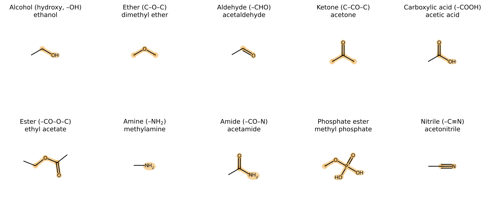
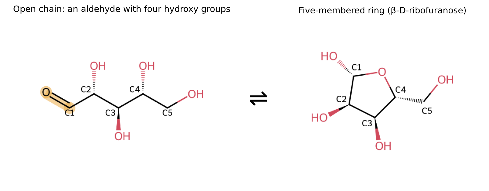
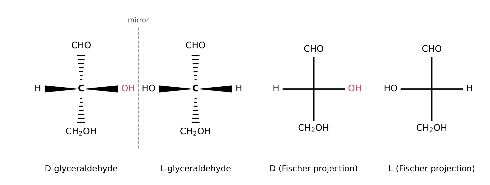
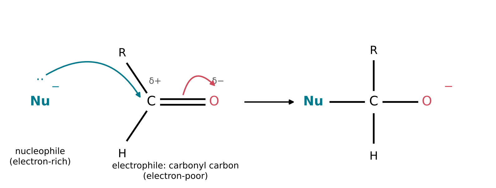

11 The Carbon Toolkit
The question of this chapter
Millions of carbon compounds are known, and no one could learn the properties of each. Fortunately, there is no need to. The behaviour of an organic molecule is decided largely by a few small groups of atoms attached to its carbon framework, and the same group behaves in much the same way in whatever molecule it occurs. This chapter asks: how can a small set of patterns be used to read the chemistry of a large molecule? It introduces the functional groups found in the molecules of life, the ways in which molecules with the same formula can differ, including the left- and right-handed forms called enantiomers, and the electron-rich and electron-poor sites at which reactions begin.
11.1 Skeletons and functional groups
Carbon frameworks
The carbon atoms of an organic molecule form its skeleton: a chain, a branched chain, a ring, or a combination of these (Chapter 3). The simplest organic compounds contain only carbon and hydrogen and are called hydrocarbons. Three families of hydrocarbons are distinguished by their carbon-carbon bonds:
- Alkanes contain only single bonds. Methane, CH4, ethane, C2H6, and propane, C3H8, are the first members.
- Alkenes contain at least one carbon-carbon double bond, as in ethene, H2C=CH2.
- Alkynes contain at least one carbon-carbon triple bond, as in ethyne (acetylene), HC\(\equiv\)CH.
A compound with only single bonds between its carbon atoms is called saturated, because each carbon carries as many hydrogen atoms as it can; a compound with double or triple bonds is unsaturated.
Systematic names indicate the number of carbon atoms in the main chain by a stem: meth- (1), eth- (2), prop- (3), but- (4), pent- (5), hex- (6). The ending indicates the family: -ane for alkanes, -ene for alkenes, -ol for alcohols, -al for aldehydes, and so on. Thus ethanol is a two-carbon alcohol and pentanal a five-carbon aldehyde. Many familiar compounds also keep older names, such as acetic acid and acetone.
Functional groups
The C–C and C–H bonds of a hydrocarbon skeleton are strong and only slightly polar (Chapter 5), and they react with few reagents. Most of the chemistry of an organic molecule happens elsewhere, at atoms or groups of atoms that contain oxygen, nitrogen, phosphorus or other elements, or at multiple bonds. A functional group is a group of atoms that gives a molecule characteristic properties and reactions, which it shows more or less independently of the rest of the molecule (IUPAC, n.d.-g). Organic compounds are therefore classified into families by their functional groups. In formulas, the rest of the molecule is often written as R (for “residue”), so that R–OH stands for any alcohol.
11.2 The functional groups of life
Table 11.1 lists the functional groups that occur most often in the molecules of life and in the small molecules from which they may have formed. Examples are drawn in Figure 11.1.
| Family | Functional group | General formula | Example |
|---|---|---|---|
| Alcohol | hydroxy group | R–OH | ethanol; the OH groups of sugars |
| Ether | oxygen between two carbons | R–O–R\('\) | dimethyl ether; the ring oxygen of ribose |
| Aldehyde | carbonyl group with one H | R–CHO | formaldehyde, acetaldehyde |
| Ketone | carbonyl group between two carbons | R–CO–R\('\) | acetone |
| Carboxylic acid | carboxy group | R–COOH | acetic acid; amino acids |
| Ester | acid joined to an alcohol | R–CO–O–R\('\) | ethyl acetate; fats |
| Amine | amino group | R–NH2 | methylamine; amino acids; nucleobases |
| Amide | carbonyl bonded to nitrogen | R–CO–NH–R\('\) | acetamide; the links of proteins |
| Phosphate ester | phosphate joined to an alcohol | R–O–PO3H2 | nucleotides; the backbone of RNA |
| Nitrile | carbon triple-bonded to nitrogen | R–C\(\equiv\)N | acetonitrile; hydrogen cyanide (R = H) |

Groups containing oxygen
- Alcohols contain a hydroxy group, –OH, attached to a carbon atom that forms only single bonds (IUPAC, n.d.-a). The polar O–H bond takes part in hydrogen bonds with water and with other hydroxy groups (Chapter 5). This is why small alcohols mix with water, and why sugars, which carry several hydroxy groups, dissolve readily in it.
- Ethers contain an oxygen atom bonded to two carbon atoms, C–O–C. They cannot donate hydrogen bonds, because they have no O–H, and they are much less reactive than alcohols. The oxygen atom in the ring of ribose is an ether-like oxygen.
- The carbonyl group is a carbon atom double-bonded to an oxygen atom, C=O. Oxygen is more electronegative than carbon, so the carbon atom carries a partial positive charge and the oxygen a partial negative charge. This polarity makes the carbonyl carbon the reactive site of many molecules (Section 11.6). In an aldehyde, the carbonyl carbon is bonded to at least one hydrogen atom, R–CHO (IUPAC, n.d.-b); formaldehyde, H2CO, is the simplest. In a ketone, the carbonyl carbon is bonded to two carbon atoms.
- A carboxylic acid contains the carboxy group, –COOH, a carbonyl group and a hydroxy group on the same carbon atom. Its hydrogen can be donated as a proton (Chapter 7). Acetic acid, for example, has pKa = 4.76 (Goldberg et al. 2002), so at pH 7 it, like other carboxylic acids, is present almost entirely as the carboxylate ion, –COO− (Chapter 8).
- An ester is formed from an acid and an alcohol with the loss of water (Chapter 7) (IUPAC, n.d.-f). In a carboxylic ester, the carbonyl carbon is bonded to an oxygen that is in turn bonded to carbon, R–CO–O–R\('\).
Groups containing nitrogen
- An amine contains a nitrogen atom bonded to one or more carbon atoms; the simplest form is the amino group, –NH2. The lone pair on nitrogen can accept a proton, so amines are bases, and many are present mostly in their protonated form, –NH3+, at pH 7.
- An amide is derived from an acid by replacing its –OH with a nitrogen group (IUPAC, n.d.-c). In a carboxylic amide the carbonyl carbon is bonded directly to nitrogen, –CO–N. Unlike an amine, the nitrogen of an amide is hardly basic, because its lone pair is drawn towards the neighbouring carbonyl group. Amide bonds link the amino acids of proteins (Chapter 12).
- A nitrile contains a carbon atom triple-bonded to a nitrogen atom, –C\(\equiv\)N. Hydrogen cyanide, HCN, can be regarded as the simplest nitrile, and it is a starting material in many proposed routes to the building blocks of life.
The phosphate group
Phosphoric acid, H3PO4 or (HO)3P=O, is an acid with three OH groups (Chapter 8). Like a carboxylic acid, it can form esters with alcohols. When one of its OH groups is joined to an alcohol, the product is a phosphate monoester; when two are joined to two alcohols, it is a phosphate diester. A phosphate diester bridges two alcohol groups through a single phosphorus atom, R–O–P–O–R\('\), and this is how the units of RNA and DNA are linked into chains (Chapter 12). The remaining OH group of a phosphate diester is strongly acidic, so in water the linkage carries a negative charge.
Molecules with several groups
Many molecules of life carry more than one functional group, and their behaviour combines the behaviour of each. An amino acid carries an amino group and a carboxy group on the same carbon atom. At pH 7, both are charged: the amino group is protonated and the carboxy group deprotonated, so the molecule carries a positive and a negative charge at once. A sugar such as ribose carries an aldehyde group and four hydroxy groups (Figure 11.2). Recognising the groups is the first step in reading any structure.
11.3 Sugars: groups that react with each other
Aldoses and ketoses
Simple sugars are compounds with the general formula Cn(H2O)n, usually with n from 3 to 7, in which every carbon atom but one carries a hydroxy group and the remaining carbon is part of a carbonyl group. A sugar whose carbonyl group is an aldehyde, at the end of the chain, is an aldose; one whose carbonyl group is a ketone, within the chain, is a ketose. The name also indicates the number of carbon atoms: a triose has three, a pentose five, a hexose six. Ribose, C5H10O5, is an aldopentose; glucose, C6H12O6, is an aldohexose.
Ring formation
A hydroxy group can add to a carbonyl group (Chapter 7). In a sugar, both groups are in the same molecule, and if the chain can bend so that a hydroxy group reaches the carbonyl carbon, the addition closes a ring. In ribose, the hydroxy group on carbon 4 adds to the aldehyde carbon, carbon 1, to form a five-membered ring of four carbon atoms and one oxygen atom (Figure 11.2). The former carbonyl oxygen becomes a new hydroxy group on carbon 1. The reaction is reversible, and in water a sugar exists as an equilibrium mixture of ring forms, with only a small fraction in the open-chain form at any moment. Ribose can also form a six-membered ring, through the hydroxy group on carbon 5. In water, about three-quarters of ribose is present as six-membered rings, about one-quarter as five-membered rings, and only about 0.1 percent as the open chain (Drew et al. 1998). In RNA, however, ribose is always present as the five-membered ring, called a furanose.
Ring closure creates a new stereocentre (Section 11.5) at carbon 1: the new hydroxy group can point to one side of the ring or the other. The two forms are called anomers and are labelled \(\alpha\) and \(\beta\). In RNA, the bond from carbon 1 to the nucleobase always has the \(\beta\) arrangement, the one drawn in Figure 11.2.

11.4 Isomers
Chapter 4 introduced isomers: compounds that have the same molecular formula but different structures, and hence different properties (IUPAC, n.d.-h). Isomers are of two broad kinds.
- In constitutional isomers (also called structural isomers), the atoms are bonded in a different order. Ethanol and dimethyl ether (C2H6O) are one example (Chapter 4). Another is the pair glyceraldehyde and dihydroxyacetone, both C3H6O3: in glyceraldehyde the carbonyl group is at the end of the chain, making it an aldose, and in dihydroxyacetone it is in the middle, making it a ketose. Ribose has many constitutional isomers among the pentoses, which is one reason why making ribose selectively is difficult.
- In stereoisomers, the atoms are bonded in the same order but arranged differently in space. Stereoisomers include the mirror-image forms described next.
11.5 Chirality
Left and right hands
An object is chiral if it cannot be superimposed on its mirror image (IUPAC, n.d.-d). A left hand and a right hand are mirror images, and no rotation will make one fit exactly onto the other. A plain sphere, by contrast, is identical to its mirror image and is achiral.
In molecules, chirality most often arises from a carbon atom bonded to four different groups. Because the four bonds point to the corners of a tetrahedron (Chapter 3), the four groups can be arranged in two ways that are mirror images of each other and cannot be interconverted without breaking bonds. Such a carbon atom is called a stereocentre. A carbon atom that carries two identical groups is not a stereocentre: its mirror image can always be turned to coincide with the original.
Enantiomers
Two molecules that are non-superimposable mirror images of each other are called enantiomers. Enantiomers have identical physical properties, such as melting point, boiling point and solubility, and identical chemical properties towards achiral reagents. They differ only in their interactions with other chiral things: they rotate the plane of polarised light in opposite directions, and they react at different rates with other chiral molecules. A mixture of equal amounts of two enantiomers is called a racemic mixture (or racemate). A chemical synthesis from achiral starting materials, without any chiral influence, always produces a racemic mixture.
D and L
Glyceraldehyde, the simplest aldose, has one stereocentre, its central carbon atom, which carries –CHO, –CH2OH, –OH and –H. It therefore exists as two enantiomers, labelled D and L (Figure 11.3). The labels refer to a drawing convention called the Fischer projection, in which the carbon chain is drawn vertically with the carbonyl group at the top; at each stereocentre, the vertical bonds point away from the viewer and the horizontal bonds towards the viewer. In D-glyceraldehyde the OH group on the stereocentre is on the right; in L-glyceraldehyde it is on the left.
For longer sugars, the label D or L is determined by the stereocentre farthest from the carbonyl group: a sugar is D if the OH group on that carbon points to the right in the Fischer projection, as in D-glyceraldehyde. In ribose this is carbon 4.

How many stereoisomers?
A molecule with n stereocentres can have up to 2n stereoisomers. The open chain of an aldopentose has three stereocentres, carbons 2, 3 and 4, and therefore 23 = 8 stereoisomers: four pairs of enantiomers, named D- and L-ribose, arabinose, xylose and lyxose. Only one of the eight, D-ribose, occurs in RNA.
One hand in life
The molecules of living organisms are not racemic. The sugars of RNA and DNA are D-sugars, and the amino acids of proteins are, apart from glycine, which has no stereocentre, L-amino acids. This uniform handedness, called homochirality, is essential for the regular structures of RNA and proteins, and its origin is one of the open questions of the origin of life: a chemical synthesis from achiral starting materials gives equal amounts of both forms, so some process must have favoured one.
11.6 How reactions begin: nucleophiles and electrophiles
Electron-rich and electron-poor sites
When a new covalent bond forms in a reaction, both of its electrons often come from one of the two partners. The partner that supplies the electron pair is the nucleophile (“nucleus-loving”), and the partner that accepts it is the electrophile (“electron-loving”) (IUPAC, n.d.-e).
- Nucleophiles are electron-rich. They carry a lone pair or a negative charge: the oxygen of water, of a hydroxy group or of a hydroxide ion; the nitrogen of an amine or of ammonia; the carbon of a cyanide ion.
- Electrophiles are electron-poor. They contain an atom with a partial or full positive charge: the carbon atom of a carbonyl group, the phosphorus atom of a phosphate group, or a proton.
How readily a nucleophile reacts is called its nucleophilicity, and it is measured by comparing rate constants (Chapter 10) for reactions with a common partner (IUPAC, n.d.-i). A negatively charged nucleophile, such as hydroxide, is generally more reactive than the corresponding neutral one, such as water.
Curved arrows
Chemists describe the movement of electrons in a reaction with curved arrows drawn on structures. Each full arrow represents the movement of one pair of electrons. It starts at the electrons that move, a lone pair or a bond, and ends where they go, at an atom (forming a new bond or lone pair) or between two atoms (forming a new bond). The step-by-step description of a reaction drawn in this way is called its mechanism.
Figure 11.4 shows the first step of the addition of a nucleophile to a carbonyl group. A lone pair of the nucleophile forms a new bond to the carbonyl carbon (first arrow). At the same time, one of the two bonds between carbon and oxygen breaks, and its electron pair moves onto the oxygen atom (second arrow), which becomes negatively charged. The carbon atom now carries four single bonds and has changed from a flat to a tetrahedral arrangement. In a final step, the negatively charged oxygen picks up a proton, usually from the solvent, to become a hydroxy group. The addition of water to formaldehyde, the addition of HCN to an aldehyde (Chapter 7) and the ring closure of a sugar (Section 11.3) all follow this pattern.

Substitution and leaving groups
In a carboxylic ester or a phosphate ester, the electrophilic atom, carbon or phosphorus, is bonded to an oxygen that can depart with its bonding electrons. When a nucleophile attacks such an atom, the attack can be followed by the departure of this group, called the leaving group. The overall result is that one group has replaced another, a substitution. Hydrolysis of an ester is a substitution in which water, or hydroxide, is the nucleophile and the alcohol part of the ester is the leaving group; the formation of an ester is the same process in reverse. The same pattern, with phosphorus as the electrophile, governs the joining of nucleotides into RNA and the cutting of RNA by water. How good a leaving group is, and how electrophilic the attacked atom is, largely determine how fast such reactions go, and therefore which bonds survive in water and which are easily formed.
Key points
- Organic molecules consist of a carbon skeleton carrying functional groups. Each functional group reacts in much the same way in whatever molecule it occurs.
- The main groups of the molecules of life are alcohols (–OH), ethers, aldehydes and ketones (C=O), carboxylic acids (–COOH), esters, amines (–NH2), amides, phosphate esters and nitriles.
- At pH 7, carboxy groups are mostly negatively charged and amino groups mostly positively charged; a phosphate diester carries a negative charge.
- In a sugar, a hydroxy group can add to the carbonyl group of the same molecule to close a ring. In RNA, ribose is a five-membered ring (furanose) with the base in the \(\beta\) position.
- Isomers have the same formula but different structures. Constitutional isomers differ in the order of bonding; stereoisomers differ in the arrangement in space.
- A carbon atom with four different groups is a stereocentre. Non-superimposable mirror-image molecules are enantiomers. Sugars of RNA are D; amino acids of proteins are L. A molecule with n stereocentres has up to 2n stereoisomers.
- Reactions often begin when an electron-rich nucleophile donates a pair of electrons to an electron-poor electrophile, such as a carbonyl carbon or a phosphorus atom. Curved arrows show the movement of electron pairs.
Self-test
- Name the functional groups in the following condensed formulas: (a) CH3CH2CHO; (b) CH3COCH3; (c) CH3CONH2; (d) CH3COOCH3; (e) H2NCH2COOH.
- Is the central carbon atom of propan-2-ol, CH3CH(OH)CH3, a stereocentre? Explain.
- Glucose in its open-chain form, an aldohexose, has four stereocentres. What is the maximum number of stereoisomers? How many of them are enantiomer pairs?
- In the reaction of hydroxide ion with the carbonyl group of formaldehyde, which species is the nucleophile and which atom is the electrophile? Describe the two curved arrows of the first step.
- A sample of glyceraldehyde made in the laboratory from formaldehyde does not rotate polarised light. Explain why.